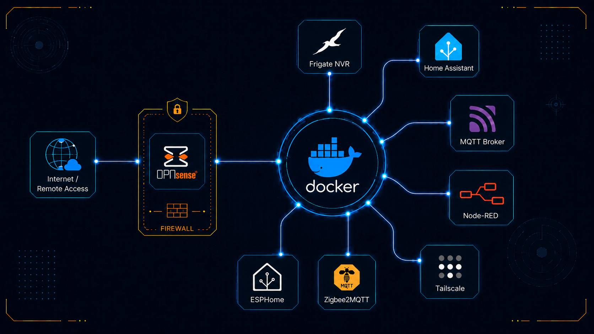
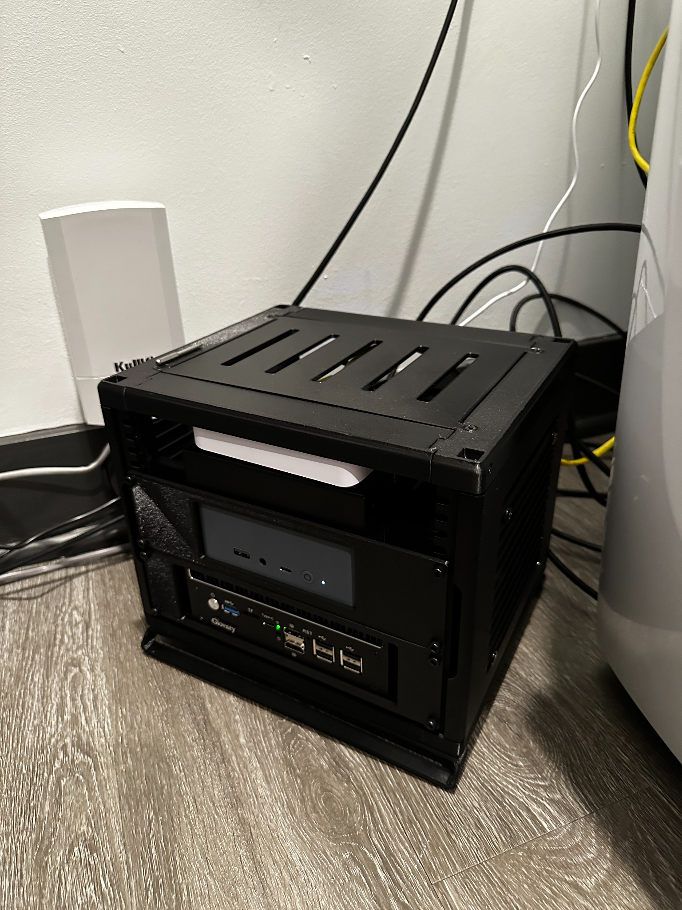
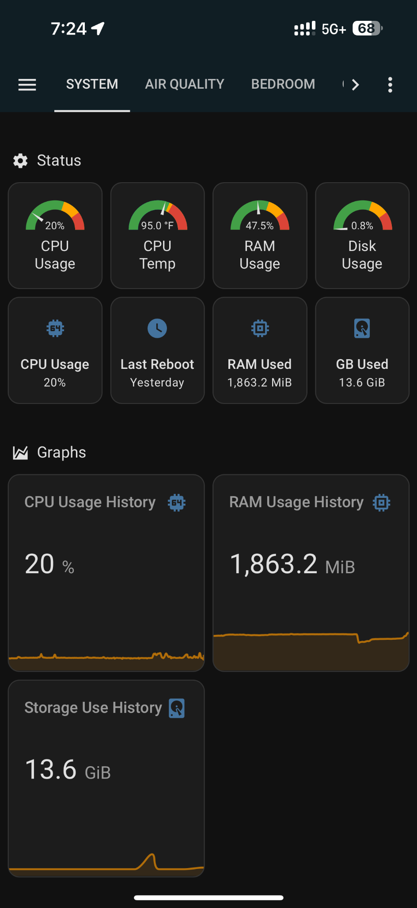
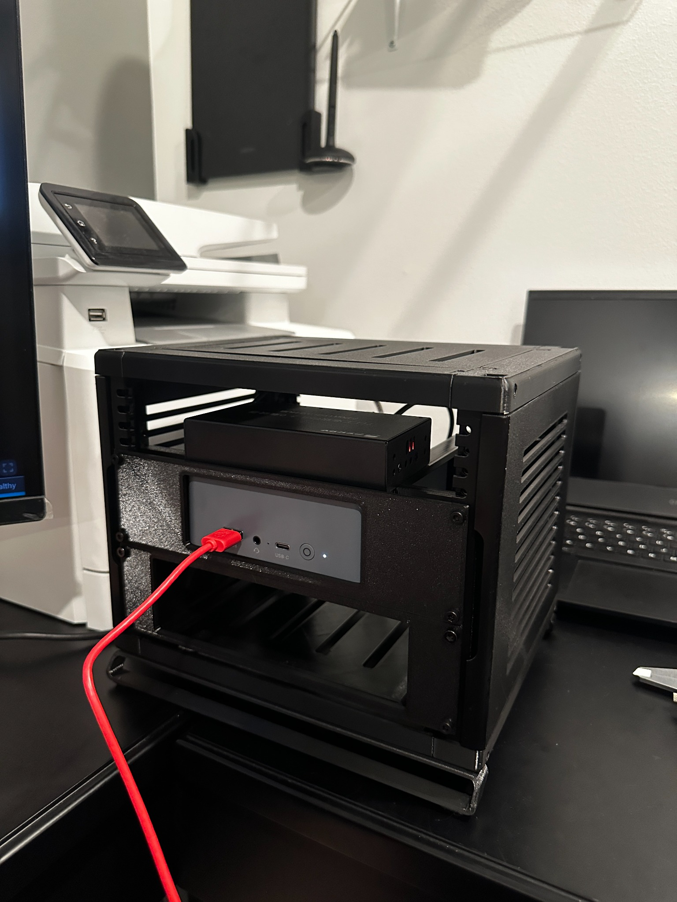

Fragmented tools
Separate camera, automation, remote-access, and dashboard apps create duplicated setup work and inconsistent user experiences.
A two-layer self-hosted platform that separates the network edge from the application plane: a dedicated OPNsense firewall appliance handles routing and policy enforcement, while a separate Debian Docker host runs surveillance, automation, messaging, and dashboard services.

This project is best understood as a small self-hosted distributed system rather than just a home lab or a camera server. I split the platform into two responsibilities: a dedicated firewall appliance for the WAN edge and security boundary, and a separate Beelink Debian host for the application layer. That decision made the system easier to reason about, easier to maintain, and far easier to explain.
On top of that platform, I deployed a containerized stack that combines Frigate NVR, Home Assistant, Node-RED, Smart Mirror services, an MQTT message bus, Zigbee2MQTT, ESPHome, and a restricted admin overlay. Coral AI offloads object detection for the surveillance pipeline so the general-purpose host CPU can remain focused on the broader application workload.
The result is a local-first system that brings together surveillance, automation, monitoring, and user-facing dashboards in one coherent architecture rather than a loose collection of apps.


I originally built this server because I did not want my automation, surveillance, and device-control workflow split across a stack of disconnected apps. Many “plug and play” systems look simple at first, but the useful features often sit behind subscriptions, the integrations can be unreliable, and the user still has to learn several separate interfaces that do not behave like one system.
The better solution was to build my own controlled platform: one network boundary, one application host, one containerized service layer, and a set of dashboards that expose the system in a way that is actually useful. That gave me a more advanced and reliable setup while also forcing me to learn how the firewall, Docker host, camera pipeline, message bus, device bridges, and dashboards work together.
The real engineering problem was not simply “How do I run a few services?” It was “How do I design a local system that avoids vendor lock-in, keeps responsibilities separated, stays observable, and can be maintained without depending on a confusing collection of third-party apps?”
Separate camera, automation, remote-access, and dashboard apps create duplicated setup work and inconsistent user experiences.
Commercial “easy” systems often hide advanced controls, automation logic, or remote access behind subscriptions or locked ecosystems.
Cloud-dependent or loosely connected systems can fail in ways that are hard to diagnose because the user cannot see the full pipeline.
Building the platform myself made the architecture more transparent: firewall boundary, Docker services, events, devices, cameras, and dashboards.
The architecture centers on one deliberate choice: keep the network boundary separate from the application plane. OPNsense owns routing, NAT, and policy enforcement. The Beelink Debian host owns the containerized services. Cameras, clients, dashboards, and the wireless access point sit behind that controlled boundary.
Debian · Docker Engine · Portainer · IoT stack
Coral AI attached to hostLocal Wi‑Fi distribution for clients and mobile access
IP camera ingest into the Frigate surveillance pipeline
Home Assistant, Frigate views, and specialized UI surfaces
[ OPNsense Firewall Appliance ]
- WAN edge
- Routing / NAT / policy
- Network boundary for the lab
|
v
[ Beelink Docker Host on Debian ]
- Docker Engine
- Portainer
- IoT_Stack
|
+--> Home Assistant ........ primary operations UI
+--> Node-RED .............. orchestration / automation glue
+--> Smart Mirror UI ....... focused daily-planning interface
+--> MQTT broker ........... message bus
+--> Zigbee bridge ......... Zigbee device adapter layer
+--> ESPHome service ....... embedded device config / updates
+--> Frigate NVR ........... camera ingest / recording / events
| |
| +--> Coral AI ...... hardware object-detection offload
|
+--> Private admin overlay . restricted remote administration
[ Cameras ] ------> Frigate
[ Sensors ] ------> MQTT / Home Assistant / Node-RED
[ Mobile / wall / desktop UIs ] --> Home Assistant / Frigate / Mirror
| Layer | Primary components | Responsibility | Why it mattered |
|---|---|---|---|
| Network boundary | OPNsense firewall appliance | WAN edge, routing, NAT, policy enforcement | Prevents application workloads from sharing the same trust boundary as the internet edge. |
| Application host | Beelink Debian host, Docker Engine, Portainer | Stable runtime for containerized services | Makes the platform reproducible, modular, and easier to maintain. |
| Surveillance pipeline | Frigate NVR, Coral AI, cameras | Camera ingest, recording, events, and object detection | Pushes inference work to dedicated hardware instead of overloading the host CPU. |
| Automation + integration | Home Assistant, Node-RED, MQTT, Zigbee2MQTT, ESPHome | Device state, automations, orchestration, and interface logic | Turns separate devices and services into one coherent operating environment. |
| User interfaces | Home Assistant dashboards, Frigate views, Smart Mirror UI | Operations visibility and daily-use access | Shows the system was designed for operators, not just for back-end bring-up. |
The tool choices work because each one owns a distinct layer instead of competing for the same role. The firewall protects the boundary, the Debian host runs the services, the message bus decouples producers from consumers, Frigate handles the surveillance workload, and the dashboards make the system usable.
Dedicated firewall, routing, and policy boundary for the lab.
Stable host OS and container runtime for reproducible service deployment.
Operational management layer for grouped Docker services and stack updates.
Local-first surveillance pipeline for camera ingest, recordings, and event handling.
Hardware object-detection offload for the Frigate detection workload.
Main operations dashboard and automation platform for the environment.
Flow-based integration layer and focused UI for daily planning information.
Messaging and device-adapter layer connecting sensors, Zigbee devices, and embedded nodes.
I owned the project end to end: boundary definition, platform selection, service deployment, integration, troubleshooting, verification, and recruiter-safe documentation. The strongest part of the work was not just getting services to run. It was deciding what each part of the system should be responsible for and then building interfaces that made the whole platform understandable.
Defined the two-box split, the major service responsibilities, and what the user-facing dashboards needed to communicate.
Connected surveillance, automation, messaging, Zigbee, and dashboard layers so they behaved like one platform.
Stood up the hosts, deployed the Docker stack, added Coral acceleration, and organized the service interactions.
Validated routing, container health, camera paths, UI visibility, and restart behavior instead of trusting the stack blindly.
The implementation followed an ordered bring-up sequence rather than an ad hoc install process. First, I established the network boundary. Then I stood up the Debian host. After that, I deployed the shared service layer, connected the surveillance stack, and finally built the user-facing operational views on top of the working back end.
Placed WAN-facing security and routing duties on a dedicated OPNsense firewall appliance.
Used a Beelink Debian system as the stable application host for containerized services.
Grouped services under a Docker-based deployment model for cleaner updates, restarts, and maintenance.
Brought up Home Assistant, MQTT, Zigbee2MQTT, ESPHome, and Node-RED as the integration layer.
Connected cameras into Frigate and attached Coral AI for hardware-accelerated object detection.
Exposed the system through operations dashboards, Frigate views, and the Smart Mirror’s specialized UI.
The most important architectural choice in this project was not a single service or dashboard. It was separating the network edge from the application layer. That reduced the size of each failure domain and made upgrades, troubleshooting, and explanations much cleaner.

Verification was approached as layered confidence building. First, individual pieces had to work on their own. Then the integrations had to work. Then the system had to recover cleanly from restarts and routine changes. Just as important, the public portfolio version had to stay sanitized.
| Test layer | What was validated | What success looked like |
|---|---|---|
| Network boundary | Firewall routing, LAN reachability, and allowed service paths | The network edge remained independent while required internal traffic still worked. |
| Container health | Docker service startup, logs, restart behavior, and dependency readiness | Core services returned predictably without manual reconfiguration. |
| Surveillance path | Camera ingest, Frigate events, and Coral-assisted detection flow | Camera streams and detections remained stable during routine use. |
| Integration layer | Home Assistant entities, MQTT messaging, Node-RED data flow, and UI population | End-to-end data paths worked without relying on manual intervention. |
| Observability | Dashboard metrics, resource history, and system status views | The running system could be judged and debugged from its own interface layer. |
| Recovery | Restart and redeploy behavior | Critical services came back in a predictable order after normal recovery events. |
| Portfolio sanitization | Screenshots, diagrams, and documentation contents | No secrets, exact ingress details, or sensitive addressing were published. |
I treated dashboards and health views as part of the engineering work, not as an afterthought. If the system cannot be observed, it cannot be maintained responsibly.
The design goal was to keep UI failures, automation issues, and surveillance workload spikes from becoming the same problem as WAN-edge routing.
The public version explains the architecture and verification approach while intentionally withholding information that would make the lab easier to fingerprint.
The biggest takeaway from this project is that the strongest systems work usually happens before the final UI. Clear boundaries, service ownership, hardware/software tradeoffs, and verification discipline mattered more than any single dashboard screen.
Once the WAN edge and the application plane were split, the rest of the system became easier to explain, troubleshoot, and grow.
Status views, resource history, and service-level visibility are not cosmetic features. They are part of how a real deployed system stays maintainable.
Adding Coral AI was not a vanity upgrade. It changed how the surveillance workload was distributed and improved the overall platform design.
A strong project write-up does not just show what was built. It shows what was intentionally omitted, why those boundaries matter, and how the system was verified.
This project ultimately shows my systems-first approach: define the boundary, assign responsibilities, integrate the layers, verify the behavior, and document the result in a way that both technical and non-technical audiences can understand.